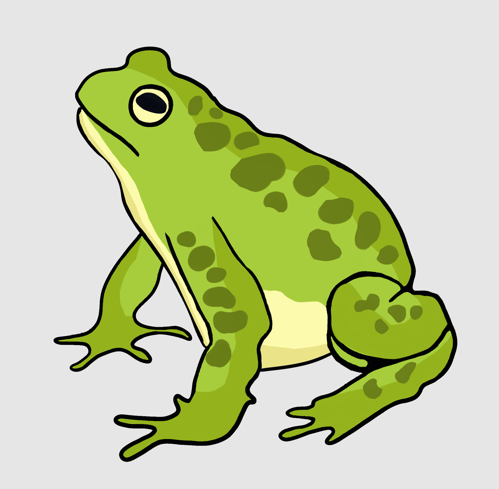

Даже самый злостный критик поистине оценит нашу шаверму, потому что наши рецепты прорабатывались при участии главного шавермоеда нашей вселенной - Юрием Хованским!
Мы специализируемся лишь только на шаверме и простых закусках, поэтому готовы отдавать заказы быстро. Вы также можете попросить приготовить для Вас шаверму по вашему рецепту, воспользовавшись нашим конструктором шавермы (Скоро будет).
Сильные заявления? Приходите к нам в заведение и убедитесь во всём сами.
Папочка всех накормит!
Виктор Баринов (наш шеф)
ʘ‿ʘ

г. Санкт-Петербург, Купчинская улица дом 25